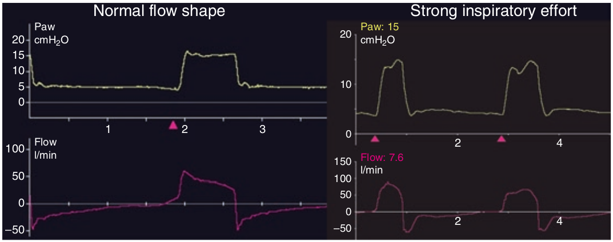

منحنی شدت جریان دمی بصورت مثلی است که قسمت افت آن الگوی نمائی در هنگام هواگیری ریه در بیماری که تلاش دمی وی اندک است دارد. اگر بیمار در تمام مدت هواگیری ریه تلاش دمی خود را حفظ کند، منحنی شدت جریان دمی الگوئی گرد پیدا می کند. حاصل این خواهد بود که برای کاهش کار تنفس حمایت فشاری (PS) ممکن است افزایش پیدا کند.

در مورد الگوی منحنی شدت جریان دمی کدام مورد زیر صحیح نیست؟
۱ - منحنی شدت جریان یک اوج اولیه و سپس یک افت نمائی دارد
۲ - منحنی شدت جریان ممکن است مربع شکل باشد
۳ - اگر تلاش دمی بیمار در تمام مدت هواگیری ریه ادامه یابد منحنی شدت جریان گرد میشود
۴ - منحنی شدت جریان بطور غیر مستقیم اطلاعاتی در مورد کار تنفس ارائه میدهد
۵ - منحنی شدت جریان تحت تاثیر نشت تصادفی قرار میگیرد